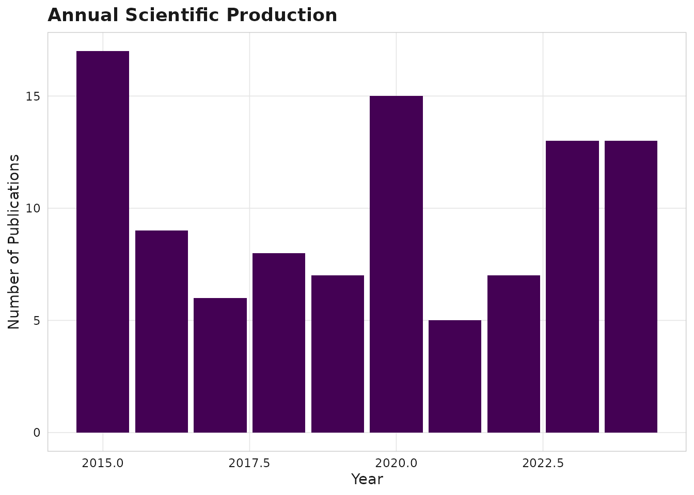
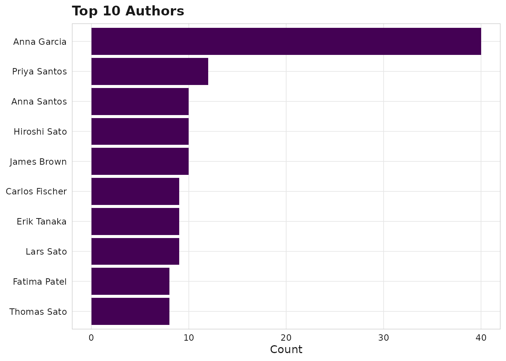

What is scimapR?
scimapR is a comprehensive toolkit for bibliometric and scientometric analysis in R. It is designed as a complement to the foundational bibliometrix package, adding:
- Live corpus refresh with staleness tracking and locking
- Research questions as first-class objects with LLM-grounded screening
- Reproducible-by-construction corpus certificates for exact re-derivation
- Author trajectory analysis with topic pivots and collaborator turnover
- Equity and representation auditing with built-in epistemic humility
- LLM-grounded corpus chat with retrieval-constrained citations
Quick start
library(scimapR)
# Generate a synthetic example corpus
corpus <- sm_example_corpus(n_works = 100, seed = 42)
print(corpus)
#>
#> ── <sm_corpus> ─────────────────────────────────────────────────────────────────
#> Works: 100 | Authors: 80 | Institutions: 0
#> Years: 2015 - 2024
#> Sources (journals): 10
#> Embeddings: 100 x 64
#> Provenance: synthetic (100)
#> Status: Unlocked (last refreshed: 2026-05-09 08:00:44)Exploring the corpus
# View works
head(corpus$works[, c("work_id", "title", "year", "cited_by_count")])
#> # A tibble: 6 × 4
#> work_id title year cited_by_count
#> <chr> <chr> <int> <int>
#> 1 W000000001 Colorectal Cancer in colorectal cancer: a met… 2023 17
#> 2 W000000002 Drug Resistance in machine learning: a cohort… 2021 24
#> 3 W000000003 Spatial Transcriptomics in single-cell RNA-se… 2024 16
#> 4 W000000004 Single-Cell RNA-Seq in gene expression: a met… 2024 22
#> 5 W000000005 Immune Checkpoint in immune checkpoint: a pro… 2024 2
#> 6 W000000006 Biomarker Discovery in spatial transcriptomic… 2022 50
# View authors
head(corpus$authors[, c("author_id", "display_name")])
#> # A tibble: 6 × 2
#> author_id display_name
#> <chr> <chr>
#> 1 A000000001 Anna Garcia
#> 2 A000000002 Maria Kumar
#> 3 A000000003 Fatima Mueller
#> 4 A000000004 Yuki Kumar
#> 5 A000000005 David Brown
#> 6 A000000006 Hiroshi SatoVisualisation
All plots use viridis colour palettes by default.
sm_plot_production(corpus)
Annual production
sm_plot_top(corpus, level = "authors", n = 10)
Top authors
Filtering
recent <- sm_filter_works(corpus, year_range = c(2020, 2024))
nrow(recent$works)
#> [1] 53Next steps
- See
vignette("ingestion")for building corpora from real data - See
vignette("relationship-to-bibliometrix")for interop with bibliometrix - See
vignette("embeddings-and-clusters")for semantic analysis - Run
sm_run_app()for the interactive Shiny explorer